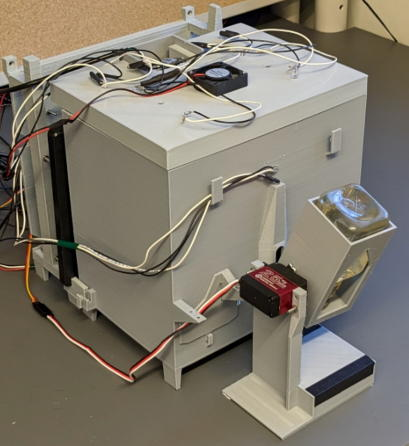
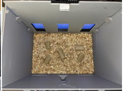
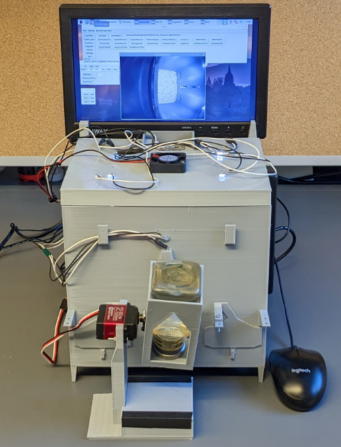
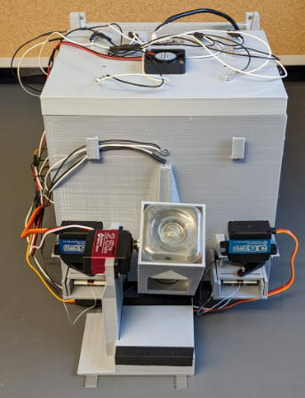
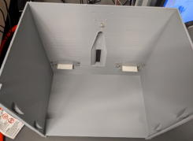

What's Operant House?
The Operant House is a home-cage operant conditioning system for mice. Both touchscreen and lever are available as interfaces.
The device can be fabricated using a standard 3D printer and can be assembled without engineering skills. The cost is approximately 500 USD per unit.
Overview of the Operant House
The Operant House is a conventional operant conditioning chamber integrated with a mouse housing. Downside of the homecage analysis is that only one animal can be tested per unit. To overcome this limitation, it is designed to minimize cost and size, enabling large-scale parallel operation of multiple units.
The followings are the feature of the device:
- All frames can be 3D printable. Electronic parts can be procured at the familiar online survice such as Amazon.com
- Task initiation, illumination for L/D cycle and task change due to achievement of the criteria are fully automated.
- Animal behavior can be monitored in real time from an office computer via remote desktop access.
- Water is used as the reward. Food pellets are ad lib (scattered on the floor).
- Animals can receive supplemenatal water at the end of session if its water intake is insufficient to keep its bodyweight.
- Behavioral results are automatically emailed to the experimenter every day.
- Water and food need to be replenished every 10 days. Cage bedding should be changed every 2 weeks.
- Ten Operant conditioning tasks are provided by default. Users can add their original task (Step-by-step instruction is available in this website).
Ref article:
10.1101/2025.01.24.634815 (bioRxiv)
Data used for the paper:
10.5281/zenodo.21811532
Video1 Video2
The minimal configuration with touchscreen. The mouse living area is 215 (W) x 145 (D) x 205 (H) mm. The size of the entire system is 253 (W) × 410 (D) × 245 (H) mm. Operation with remote desktop is needed for this configuration.

Inside of the chamber.

Configuration with touchscreen and operation monitor.

Configuration with two retractable levers.

Both levers are insterted positions.

Other features:
- Supported equipments: Sensitive touch panel, Retractable levers, Water reawrd, Reward cue LED, Roof illumination LEDs, Detection of water access. Brightness of each LED is adjustable.
- Overhead camera records behavior of animal during task.
- Cheap ($360 each) and can be printed with 3D printer.
- Compact size: W 260 x D 450 x H 280 mm / W 10.2 x D 17.7 x H 11 inches (normal configuration).
- No electronics knowledge is needed because instruction website is designed for neuroscientists without engineering background.
- The step-by-step instruction site guides you to add user custom tasks.
- Multiple sessions can be performed in a day.
- Task switch to the preset next task automatically when it animal achieves criteria. Experimenter don't need to do intervent entire paradigm except water and food supply.
- Support TTL signal and time stamp output to enable to combine with optogenetics and in vivo imaging.
- Full GUI operation.
- Can be used as a conventional (non-homecage type) operant conditioning device.
Default tasks
Spatial discrimination (spatial memory)
Visual discrimination (visual memory)
Patern separation
Go-Nogo test
Habitual behavior （perseveration）
Probabilistic reversal spatial learning (perseveration(
Delayed alteration (working memory)
DMTP/DNMTP (working memory)
5CSRTT (attention)
Lever conditioning (learning)
Feel free to ask any quentions, requests and suggestions here,
https://groups.google.com/g/operanthouse
Update
2026.03.16 Food chute was added to the roof.
2026.03.02 Model data of body and roof were updated.
2025.10.23 Default values for IR sensor settings were fixed. Revised description of IR sensor bar.
2025.10.22 Part list was updated.
2025.10.08 Added documentation and adaptor part data for Miniscope and set up instruction for an SMTP server for the practice of email-sending function.
Added countermeasures for false detection of the IR sensor bar.
2025.02.01 Website updated.
2024.08.22 Fixed a bug where part data was mistakenly displayed in the software location.
2023.12.27 Corrected the main unit model data.
2023.04.12 Made partial corrections to the optional parts (touch panel) page.
2023.04.07 Fixed an issue where the default value of TouchOffTime in ver0.928 was too short (updated to ver0.929).
2023.04.06 Program update (ver0.928). Modified to allow specifying arbitrary textures for arbitrary panels. Implemented background initialization for panel ROIs.
2023.04.03 Completed implementation of the infrared sensor bar and operation monitor. Updated the program and model data (230331).
2023.03.31 Program and parts data package are updated.
The Operant House project is certified by OSHWA (US002803).
(C) 2021 Shintaro Otsuka